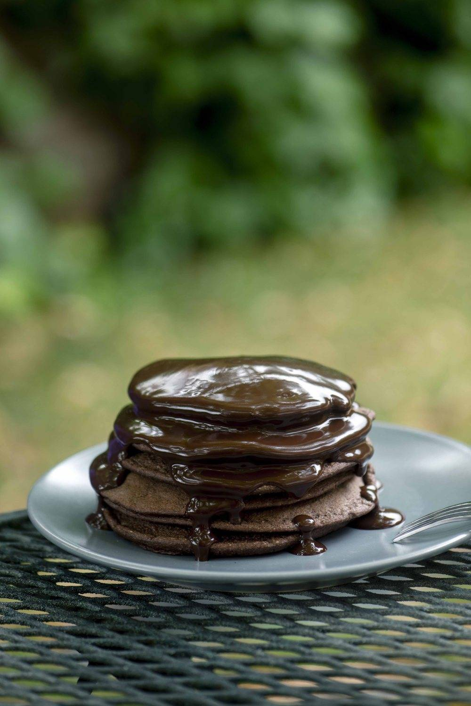

This recipe reimagines the classic Brazilian Crepioca as a high-protein, chocolatey indulgence that blurs the line between a healthy breakfast and a decadent dessert. By blending tapioca flour with six eggs and a touch of cream cheese, the batter achieves a light, airy consistency that perfectly carries the rich cocoa notes. The addition of chia or sesame seeds introduces a subtle, nutty crunch to the exterior, while the chocolate powder ensures every bite is deeply flavorful. It is a modern, versatile dish that honors its traditional roots while elevating the nutritional profile for a more satisfying meal.
The true magic of this version lies in the interplay of textures and the distinctively Brazilian filling. As the chocolate-infused batter sets in the pan, a generous layer of hazelnut cream is paired with Standard Minas cheese, creating a sophisticated balance between the gooey sweetness and the mild, slightly salty finish of the cheese. When folded and served hot, the melted cheese softens the intensity of the chocolate, resulting in a comforting, warm center. This combination of local heritage and contemporary flavors makes it an ideal choice for a sophisticated brunch or a post-workout treat.
For a more "gourmet" presentation similar to your image, you can stack several plain chocolate crepiocas and pour a warm chocolate ganache over the top, using the cheese and hazelnut spread between the layers.